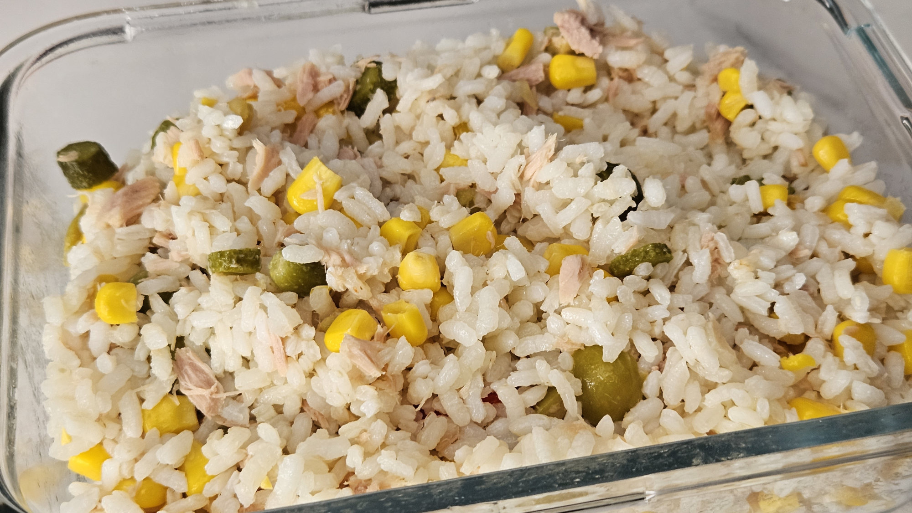

Home
Rice Salad

Description
Delicious, quick and fresh salad for summer with white tuna, corn and pickles
Ingredientes
- Boiled rice
- Can white tuna packed in water, drained
- Can whole kernel corn, drained
- Pickled gherkins
- Untoasted walnuts halves
- Olive oil
- Vinegar
- Black pepper
- Salt
Steps
- Slice pickles and walnuts
- Gather them with rice, tuna and corn kernels in a salad bowl. Stir everything
- Add vinegar and olive oil
- Season with salt and pepper
- Put it on the fridge for at least an hour